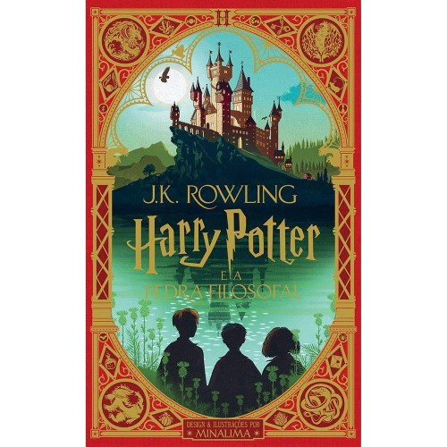
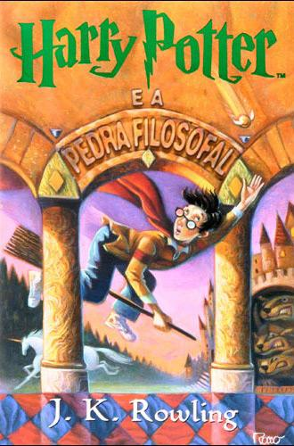
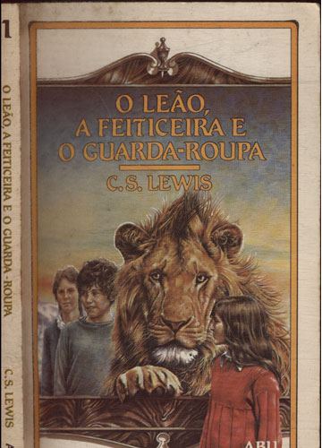
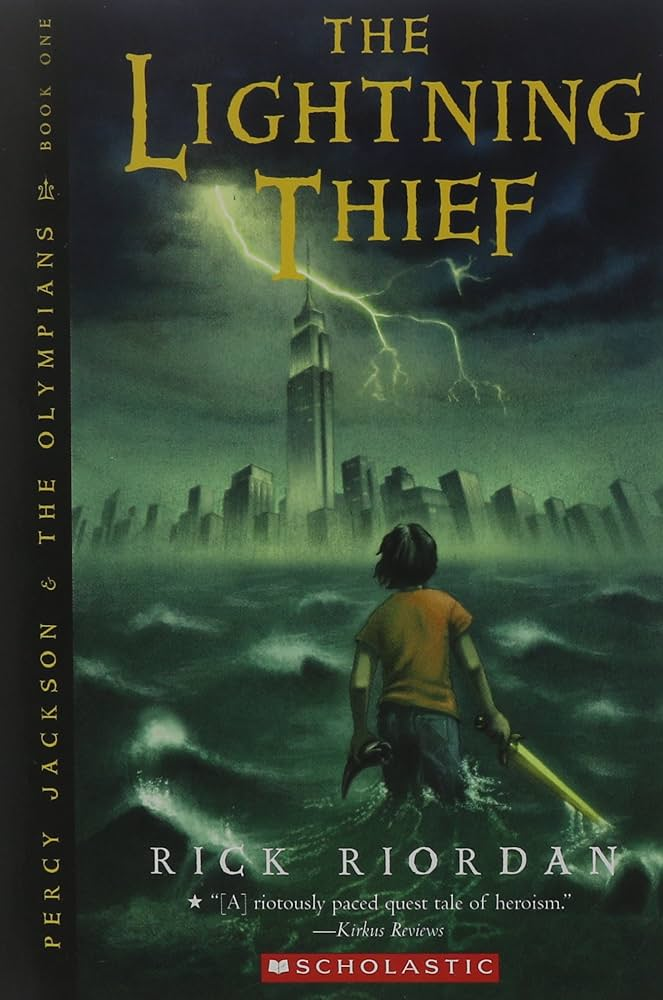
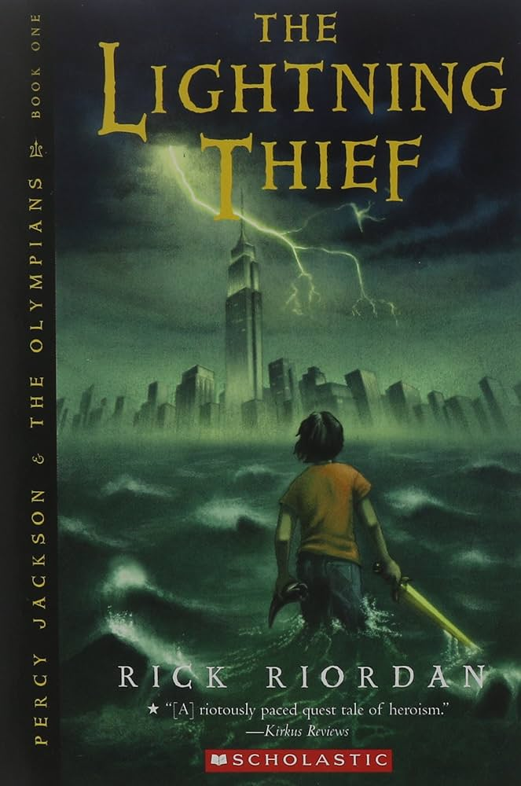
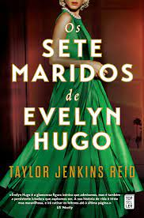
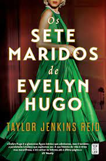
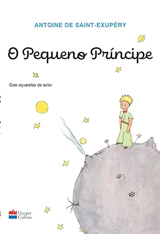
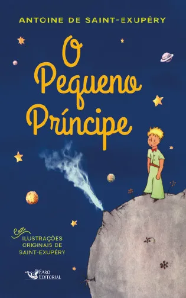

Harry Potter e a Pedra Filosofal, J.K. Rowling
Harry Potter é um garoto cujos pais, feiticeiros, foram assassinados por um poderosíssimo bruxo quando ele ainda era um bebê.
Ele foi levado, então, para a casa dos tios que nada tinham a ver com o sobrenatural. Pelo contrário. Até os 10 anos, Harry foi
uma espécie de gata borralheira:
maltratado pelos tios, herdava roupas velhas do primo gorducho, tinha óculos remendados e
era tratado como um estorvo. No dia de seu aniversário de 11 anos,
entretanto, ele parece deslizar por um buraco sem fundo,
como o de Alice no país das maravilhas, que o conduz a um mundo mágico. Descobre sua verdadeira história
e seu destino:
ser um aprendiz de feiticeiro até o dia em que terá que enfrentar a pior força do mal, o homem que assassinou seus pais.


Valor: R$40,00
|
As Crônicas de Nárnia - O leão, a feiticeira e o guarda-roupa, C.S Lewis
Dizem que Aslam está a caminho. Talvez já tenha chegado', sussurrou o Castor.
Edmundo experimentou uma misteriosa sensação de horror.
Pedro sentiu-se valente e vigoroso.
Para Susana, foi como se uma música deliciosa tivesse enchido o ar.
E Lúcia teve aquele mesmo sentimento que nos desperta a chegada do verão.
Assim, no coração da terra encantada de Nárnia,
as crianças lançaram-se na mais excitante e
mágica aventura que alguém já escreveu.


Valor: R$35,00
|
Percy Jackson e os olimpianos, O ladrão de raios, Rick Riordan
O garoto-problema Percy Jackson é um deles. Tem experiências estranhas em que deuses e
monstros mitológicos parecem saltar das páginas
dos livros direto para a sua vida. Pior que isso: algumas dessas criaturas estão bastante irritadas.
Um artefato precioso foi roubado do Monte Olimpo
e Percy é o principal suspeito.
Para restaurar a paz, ele e seus amigos – jovens heróis modernos –
terão de fazer mais do que capturar o verdadeiro ladrão:
precisam elucidar uma traição mais ameaçadora que fúria dos deuses.
 

Valor: R$35,00
|
Os sete maridos de Evelyn Hugo, Taylor Jenkins Reid
Lendária estrela de Hollywood, Evelyn Hugo sempre esteve sob os holofotes ― seja estrelando uma produção vencedora do Oscar,
protagonizando algum escândalo ou aparecendo com um novo marido… pela sétima vez. Agora, prestes a completar oitenta anos e
reclusa em seu
apartamento no Upper East Side, a famigerada atriz decide contar a própria história ― ou sua “verdadeira história” ―,
mas com uma condição:
que Monique Grant, jornalista iniciante e até então desconhecida, seja a entrevistadora. Ao embarcar nessa
misteriosa empreitada, a jovem
repórter começa a se dar conta de que nada é por acaso ― e que suas trajetórias podem estar profunda
e irreversivelmente conectadas.
 

Valor: R$50,00
|
O Pequeno Princípe, Antoine de Saint Exupéry
Nesta história que marcou gerações de leitores em todo o mundo, um piloto cai com seu avião no deserto do Saara e encontra um
pequeno príncipe,
que o leva a uma aventura filosófica e poética através de planetas que encerram a solidão humana. Um livro
para todos os públicos,
O pequeno príncipe é uma obra atemporal, com metáforas pertinentes e aprendizados sobre afeto,
sonhos, esperança e tudo aquilo que é invisível aos olhos.


Valor: R$20,00
|
O Código Da Vinci
O livro O Código da Vinci é uma aclamada obra de suspense
,criada pelo grande escritor Dan Brown que teve sua primeira
impressão no Brasil em 2004 mas que até
hoje conquista fãs. Acompanhando a história de Robert Langdon,
vemos uma série de intrigas e conspirações que prometem
abalar o mundo caso sejam reveladas a população mundial,
acarretando em desordem e novas ideias mundiais.


Valor: R$45,00
|